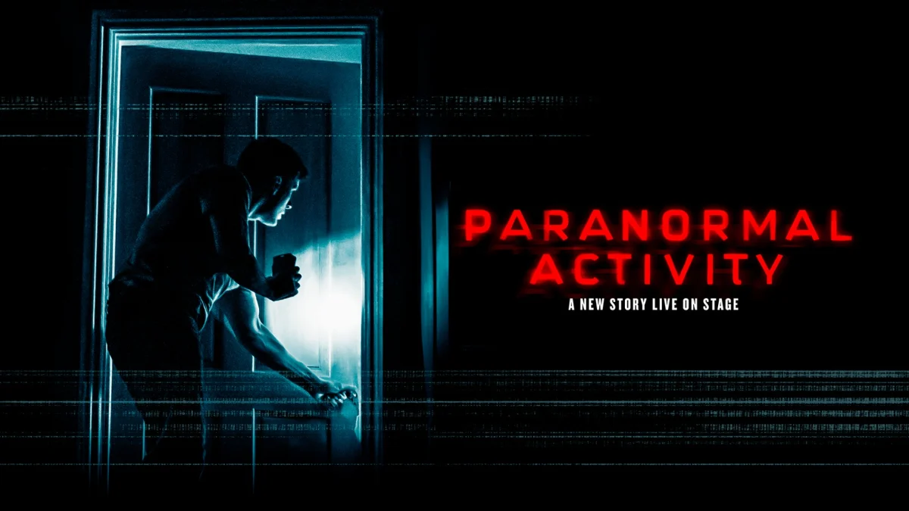

Our Family Verdict
Amazing Performances Elevate a Terrifying Stage Thriller
From the moment the house set comes into view, it’s clear you’ve stepped into a very typical, lived-in home—right down to the meticulously curated bric-a-brac. But this familiar domestic styling is brilliantly weaponized against the audience. The split-level set design works fantastically well, spreading across the stage to create an inescapable sense of dread and allowing long, skeletal shadows to stretch menacingly across both the upper and lower levels.
While the overarching genre tropes can feel somewhat predictable in their construction, any familiarity in the plot is easily forgiven thanks to the phenomenal cast on stage. James Bye (James) and Hannah Sinclair Robinson (Lou) play their roles to absolute perfection. They provide a genuine, palpable sense of a couple deeply in love, yet carrying an unspoken weight. In the earlier, lighter moments, this dynamic yields wonderful, laugh-out-loud comedy—especially as the characters navigate cultural differences after moving from America to England, such as James’s utter bewilderment over why a certain shop is called "TK Maxx" instead of "TJ Maxx" over just a single stray letter. These silly, endearing nuances draw genuine warmth and laughter from the room before the tension begins to tighten.
As the pressure builds, however, those quick snatched kisses and early displays of affection steadily tire out, replaced by snapping remarks and barbed tongues that showcase the strain of a warring relationship.
Lighting and shadow play an active, malicious role around them. There is constant, brilliant light trickery at play—such as the hyper-realistic flash of blue emergency lights or car headlights sweeping past the outside windows—that not only anchors the scene in realism but rips open terrifying new pockets of shadow just in time for the next scare.
This visual unease is matched beat-for-beat by masterclass sound design. In the auditorium, every sound is intensely heightened; every whispered breath and hushed noise amplifies the nervous energy in the room, while the audio cues for the jump scares hit with terrifying precision. Initially, in both Act One and Act Two, the first couple of potential jump scare moments that shook the wider audience didn't land on me at all. That bred a quick sense of cockiness and pride—thinking to myself that it wasn't really all that scary—right before the production pulled the rug out and the real scares finally started hitting me, too.
That mounting tension isn't just psychological, either; thanks to my Pixel Watch, I discovered at the end of the night that my resting heart rate climbed by over 30% during the show—a very tangible, physical indicator of the sheer drama and tension created on stage.
Amidst this relentless pressure, the physical performances continue to astonish. There is a standout scene which is brilliantly brought to life with a masterclass in physical execution. The sudden, seamless shifts and immediate spikes of tension mark a true turning point in James’s belief.
As an avid fan of horror and scare films who strangely never caught the original Paranormal Activity screen series, I went into this live staging not knowing quite what to expect. While the narrative framework follows a somewhat familiar path, the sheer craftsmanship of the staging and the powerhouse acting make it a gripping night out. It leaves a compelling bigger question for the future of theatre: if supernatural chills can be pulled off this successfully on stage, could we eventually see large-scale horror milestones like a sweeping Dawn of the Dead adaptation brought to live audiences? Who knows—but based on this caliber of production, the future of stage horror looks thrillingly bright.
Ultimately, it leaves you with a deeper question: How should you judge a thriller or a horror? Should you judge it purely on how you feel in the moment as the story unfolds on stage? Or should you judge it on the sense of dread you feel later—when the crowds and the auditorium have cleared, you return home, and your quiet suburban street feels heavy? Is the true mark of a good thriller when you find yourself pressing your back to the front door as you unlock it, just so you can survey the emptiness and keep an eye on the shadows, flicking on every light as you dash upstairs to bed while actively avoiding the dark? If that lingering, skin-crawling aftermath is the metric, this production passes with flying, terrifying colors.
Production Gallery
Sensory Strategies & Parent Insights
- Running Time: 2hrs 10mins (Incl. Interval).
- Intense Soundscapes: Sudden loud noises and precise audio cues for jump scares hit with high volume spikes. Consider noise-reducing earplugs or defenders if hypersensitive to loud sounds.
- Dramatic Lighting Shifts: Flickering lights, sudden blackouts, and amplified darkness combine with light casting long, threatening shadows.
- Horror Elements & Gore: Features intense jump scares, psychological terror, and horror elements including blood and gore. Not for the faint-hearted.
- Age Guidance: Ages 15+ Due to mature themes, sustained terror, and jump scares, this production is strongly recommended for older teens and adults.